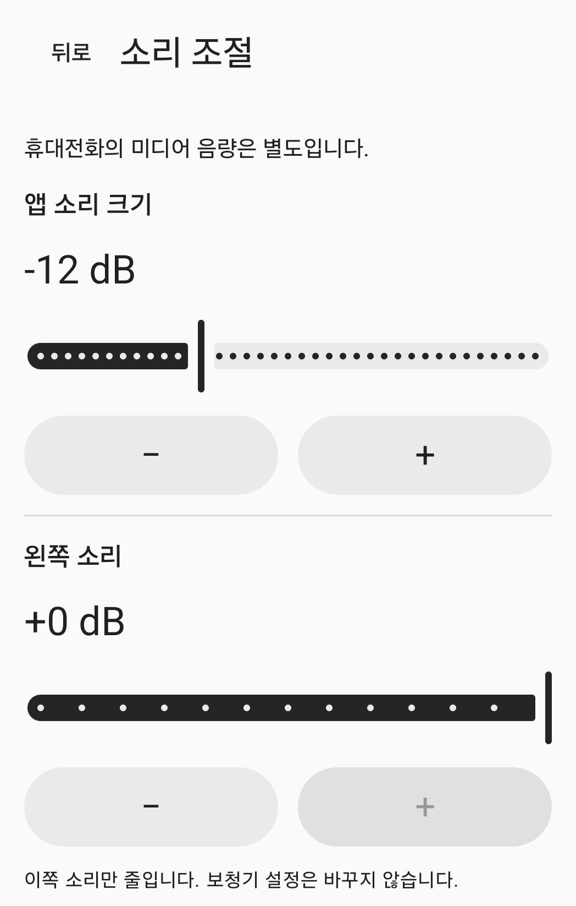

주변 소리 조절 도구
주변 소리를,내 손으로 조절하세요.
휴대폰 마이크로 받은 소리를선택한 이어폰으로 전달합니다.크기·좌우·음색을 직접 조절하세요.
사용 방법 보기현재 공개 출시 전입니다.

사용 방법
연결하고, 조절하고, 시작하세요.
연결
휴대전화에 이어폰을 연결한 뒤, 앱에서 소리를 받을 이어폰을 선택하세요. 기본은 유선·USB 모드입니다. Bluetooth는 실험 모드를 켜고 연결된 출력을 직접 선택합니다.
조절
앱 소리 크기·좌우·음색을 조절하세요. 휴대전화 미디어 음량은 별도로 설정합니다. 이어폰을 착용하고 낮은 음량으로 준비하세요.
시작
마이크 권한을 허용하고 세션 안내를 확인한 뒤 동의·시작 버튼을 누르세요. 권한 허용만으로 마이크가 켜지지 않습니다. 앱이나 세션 알림에서 중지할 수 있습니다.
소리 조절
필요한 조절을 직접 선택하세요.
앱 안의 조절값과 휴대전화 미디어 음량은 서로 별개입니다.
앱 소리 크기
선택한 이어폰으로 전달되는 소리 크기를 앱에서 조절합니다. 휴대전화 미디어 음량도 함께 확인하세요.
왼쪽·오른쪽
좌우 소리를 각각 줄여 조절합니다. 이어폰이나 보청기 자체 설정은 바꾸지 않습니다.
음색
음색을 수동으로 조절합니다. 청력검사 결과를 바탕으로 자동 보정하는 기능은 아닙니다.
위 이미지는 실제 소리 조절 화면의 일부입니다. 오른쪽·음색 조절부는 발췌 범위에 보이지 않습니다.
자주 묻는 질문
사용 전에 궁금한 점
Bluetooth 이어폰도 사용할 수 있나요?
Bluetooth는 실험 모드입니다. 이 휴대전화에 연결한 뒤 실험 모드를 켜고 출력을 직접 선택하세요. 지연과 음질은 휴대전화와 이어폰에 따라 달라집니다.
이어폰을 다시 연결하면 자동으로 시작하나요?
아니요. 경로·포커스·권한을 잃으면 세션이 종료됩니다. 이어폰 재연결이나 앱 재실행만으로 자동 시작하지 않으며, 준비 후 직접 다시 시작해야 합니다.
이어폰이 목록에 없으면 어떻게 하나요?
이 휴대전화의 Bluetooth 미디어 오디오 연결을 확인하고 출력 목록을 새로 확인하세요. 자세한 내용은 지원 페이지에서 확인할 수 있습니다.
녹음 파일이나 앱 데이터를 지우려면 어떻게 하나요?
앱은 마이크 녹음 파일을 생성하지 않습니다. 기기 안의 조절값·권한 요청 이력·선택적 최근 시험 수치 삭제는 데이터 삭제 안내에서 확인하세요.
사용 전 확인해주세요.
일반 청력의 성인(18세 이상)을 위한 주변 소리 수동 조절 도구입니다. 청력 손실 보정·보청기 대체·청력검사·진단·치료를 목적으로 하지 않습니다.
말소리 선명도 향상, 실제 지연, 음향 안전성은 검증되지 않았습니다. 완전한 잡음 제거나 무지연을 보장하지 않습니다.
공개 스토어 출시는 아직 이루어지지 않았습니다. 이곳은 제품 정보·지원 페이지입니다.